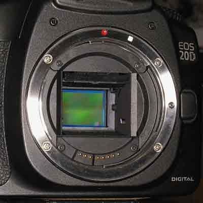
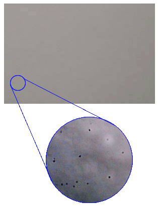
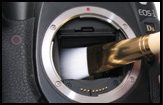

Misure & laboratorio
Sensor cleaning - pulizia sensore Cmos o CCD
i consigli fotografici di R.Chirio
Indice della pagina

Uno dei più fastidiosi problemi che si presentano usando le reflex digitali è la presenza di polvere depositata sul sensore C-mos o CCD.Anche usando la pellicola la polvere è sempre stato un problema, ma al limite si deposita su un fotogramma, non su tutti!
Chi usa una reflex digitale prima o poi (è sicuro!) dovrà risolvere il problema della polvere e sporcizia depositata sul sensore.
E' evidente che il sensore viene esposto agli agenti esterni solo quando si aprono le lamelle dell'otturatore, ma questo basta per fare entrare le minuscole particelle di polvere.
Gli ultimi modelli di reflex presentano una elevata velocità di scatto 5 ft/s o 8 ft/s .... questo genera una notevole ventilazione all'interno della camera, anche molto aiutata dal movimento dello specchio. E' quindi facile che la sporcizia e la polvere già entrata facilmente nella zona specchio, passi facilmente dietro sul sensore.
Alcune regole da rispettare per prolungare il tempo tra una e l'altra pulizia del sensore:
● evitare il più possibile di esporre l'attrezzatura alla polvere (borse o zaini di buona qualità e ottiche e corpo macchina sempre dentro sacchetti protettivi).
● tenere puliti gli obiettivi molto bene, particolarmente nella parte posteriore.
● pulire ed aspirare regolarmente la polvere dalle borse fotografiche.
● lavare spesso con acqua e sapone i tappi in plastica degli obiettivi e della reflex (la polvere rimane negli angoli). Non lasciare mai a lungo ottiche ed corpo macchina senza tappi.
● se si opera in ambienti e luoghi polverosi, evitare gli zoom a pompa (tipo Canon 100-400 o 35-350 o il 28-300) e privilegiare gli zoom con movimenti interni e le ottiche fisse con le guarnizioni di tenuta.
● quando si cambia l'obiettivo tenere la reflex girata verso il basso.
● evitare di cambiare l'obiettivo in ambienti polverosi, quando c'è vento e in ambienti affollati. (il muoversi e camminare alza molta polvere).
● è sbagliato camminare con la macchina fotografica appesa al collo, anche se è scomodo, è meglio riporla ogni volta nella borsa.
● un fotografo fumatore ha molte probabilità di avere le ottiche e il sensore con su una patina di nicotina....
Verifica della presenza di polvere sul sensore.

Inquadrare il cielo sereno e scattare con il diaframma chiuso al massimo almeno f.22 o meglio a f.32 (obiettivi macro) meglio usare focali corte tipo 50mm. Meglio se la messa a fuoco è posta alla minima distanza.
Va bene anche fotografare una parete bianca, tenere la messa a fuoco al valore minimo, così da avere la parete sfuocata, sempre con f.22 o maggiore.
Con Photoshop o altri
programmi di ritocco fotografico, regolare i
livelli e il contrasto così da evidenziare i punti neri.
Ingrandire a formato reale l’immagine e passarla sotto esame specialmente nella zona bordi, la presenza di polvere è notabile con piccoli puntini molto nitidi, gli eventuali aloni più grossi
e meno marcati determinano la presenza di polvere sulle lenti dell’obiettivo in uso.
(Da pulire anche lui, prima di rimontare sulla reflex con il sensore
pulito. Se la polvere è presente sulle lenti interne, è meglio portare
l'obiettivo al centro assistenza.)
COME PULIRE IL SENSORE
ATTENZIONE !!
La pulizia del sensore và fatta da persone esperte nella manutenzione degli organi interni delle macchine fotografiche, non si assume nessuna responsabilità per danni a persone e cose, chi scrive è un tecnico esperto.
Prima di togliere il tappo copri camera pulire bene tutta la camera esternamente, evitare abbigliamento che rilasci peli e polvere, e importante cercare di essere in un ambiente molto chiuso e per niente polveroso, senza tappeti, tende e assolutamente lontano da fumatori e animali domestici, senza che altre persone si muovano alzando polvere. E' consigliabile togliere la polvere e lavare i pavimenti nel locale, e attendere qualche ora prima di pulire il sensore.
E' molto utile una cuffia in testa sui capelli per evitare che cadano capelli e forfora.
Bisogna avvicinarsi a un ambiente simile alla camera operatoria.
Se non ci sono queste condizioni evitare l’operazione di pulitura sensore e portate la camera al centro assistenza.
L’occasione di pulire il sensore deve anche essere quella di pulire tutti gli obiettivi specialmente nella parte posteriore, lo zoom a pompa come il Canon 100/400 è terribile per accumulare polvere all’interno.
La pulizia degli obiettivi va fatta dopo ogni spedizione in posti dove si è verificato un alzarsi di polvere. La pulizia delle lenti dell'obiettivo va fatta con gli appositi kit completi di liquido per ottiche, anche se questa operazione è più facile di quella del sensore và sempre fatta con la massima attenzione per evitare di rigare le ottiche, usando attrezzature specifiche.
PULIZIA SENSORE
● La reflex va saldamente fissata su un robusto cavalletto.
● Prima di aprire l’otturatore e scoprire il sensore pulire la camera e la zona specchio, altrimenti basterà poco per riportare la polvere all’interno e sul sensore.
●
Pulire e aspirare lo sporco dal prisma e tutta la camera, utilizzare anche del nastro adesivo rivolto verso l’esterno
(tipo il Post-it) per acchiappare peluzzi e polvere che è depositata all’interno della camera.
●
Attivare la funzione pulizia sensore e aprire così l’otturatore e portare in vista il sensore, un primo esame a vista ci darà subito l’idea della gravità sulla presenza polvere.
●
Utilizzare occhiali da ingrandimento per lavori elettronici di precisione, perché la polvere non si vede
con vista normale, inoltre aiutarsi con una forte illuminazione a luce led, che essendo fredda e a temperatura colore alta evidenzia
meglio la polvere.
● Prima fase: (operazione facile non ci sono rischi di rigare il sensore)
Se si vedono pochi punti o piccoli peli si può inizialmente provare a soffiare con aria compressa. Utilizzare le apposite bombolette spray con tubetto, tenere il tubetto 20-30 cm dal sensore, la prima soffiata non va fatta verso il sensore in quanto di solito escono delle impurità e residui presenti nel tappo e tubetto, pertanto fare una bella soffiata verso l'esterno. La successiva diretta verso il sensore, tenendo ben ferma e verticale la bomboletta e sempre a 20-30 cm dal CMOS.
A questo punto è facile verificare visivamente se sono ancora presenti delle impurità sul sensore, se sembra pulito, chiudere e rifare la foto di prova descritta sopra.
Se l'immagine ingrandita non presenta punti neri, il problema è risolto.
Se invece sono ancora presenti punti e segni sull'immagine bisogna fare una pulizia più approfondita.
● Seconda fase: (operazione meno facile, ci sono rischi di rigare il sensore)
La pulizia della superficie in vetro del sensore va fatta con il pennello a carica elettrostatica ( Sensor Brush della VisibleDust oppure SensorSweep della Copperhill) specifico come dimensioni per il sensore relativo, la Canon 20D necessita un pennello da 14mm.
Prima di
passare il pennello sul sensore, caricare elettrostaticamente lo stesso soffiando
con la bomboletta di aria compressa sul pennello stesso per 5/10 secondi
(altrimenti non raccoglie la polvere), quindi fare una
sola passata da sinistra a destra. 
Estrarre il pennello e soffiare via la polvere (dal pennello) con un forte getto di aria pulita, ed eventualmente ripetere l’operazione.
E'
possibile nel tempo pulire il pennello con un liquido specifico che non riduce
la carica elettrostatica.
Chiudere la camera e rifare la foto di prova e ingrandire l’immagine,
una pulizia al 100% come a camera nuova, non è pensabile,
accettare piccoli puntini
al bordo immagine è un buon compromesso.
● Terza fase: (operazione non facile, ci sono rischi di rigare il sensore)
Se rimangono ancora parecchi punti fastidiosi, bisogna fare una pulizia approfondita del sensore, questa volta usando il Sensor Clean con il liquido pulitore, esistono due tipi di liquido, quello che stacca la polvere e quello a ph neutro per eventuali punti di origine non minerale come aloni di saliva o microrganismi...
Mettere alcune gocce di liquido Eclipse® sul tampone di tessuto antigraffio dello Swab e fare delle leggere passate sul sensore cercando di portare la polvere in un angolo in basso, poi sempre con il tampone facendo piccoli movimenti rotatori rimuovere la sporcizia rimasta nell'angolo. (Non usare il pennello elettrostatico per questa pulizia e nemmeno i bastoncini di cotone tipo cotton-fiocc).
Con un po' di esperienza già il controllo visivo del sensore ci permette di capire se è diventato perfettamente pulito. Chiudere l'otturatore, controllare bene la non presenza si polvere e peluzzi nella zona sotto e sullo specchio e rifare la foto di test.
Consiglio comunque di non esagerare con la pulizia sensore, farla solamente se la quantità di punti diventa fastidiosa. Per dare un riferimento direi che per uso amatoriale una volta ogni sei mesi può essere accettabile.
ATTENZIONE !! RIPETO!!
La pulizia del sensore và fatta da persone esperte nella manutenzione degli organi interni delle macchine fotografiche, non si assume nessuna responsabilità per danni a persone e cose, basta veramente poco per rigare il sensore. Chi scrive è un tecnico esperto.
Liquido Eclipse® distribuito in Italia da www.shadesdirect.com
SensorSweep and Swab disponibili presso: www.pbase.com/copperhill/image/44822724
Sensor Brush e Sensor Clean disponibili presso: www.visibledust.com
un altra soluzione interessante: http://www.intemos.com/products.asp
© Roberto Chirio: all rights reserved.